Documentation
Full system design and technical reference for WitcherCraft.
1. Overview
Witchercraft is a Minecraft mod built on NeoForge that brings the world of CD Projekt Red's The Witcher 3: Wild Hunt into the world of Minecraft. The mod aims to recreate the core systems that define the Witcher experience - Signs, Alchemy, monsters, and a deep RPG progression system - while adapting them thoughtfully to Minecraft's design language.
Rather than simply porting assets, Witchercraft treats each system as a design problem: how do you make Witcher mechanics feel meaningful and balanced inside a sandbox game that operates by fundamentally different rules?
2. Features
2.1 Witcher Signs
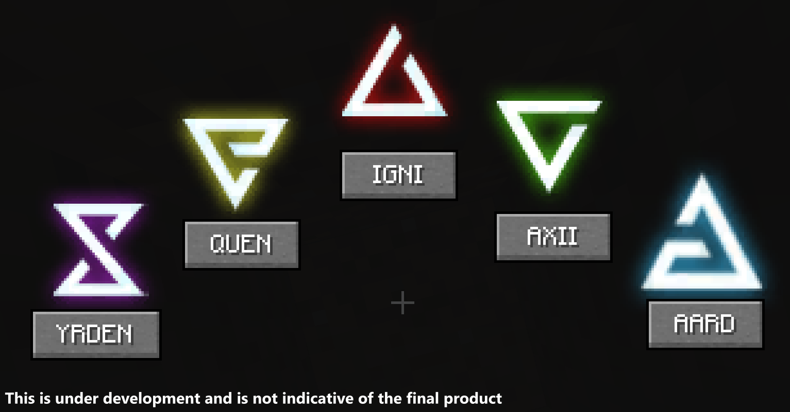
Figure 2.1 - The Sign Menu, opened with the Sign Gui keybind (Tab). Click a Sign to select it, press R to cast.
Signs are the signature active abilities of Witchers. Each can be cast with keybind. Sign Intensity - a dedicated player stat - scales all Sign effects and is boosted by Griffin School Gear or Skill Tree investment. Signs have no cooldown and are only limtited by player's stamina.
| Sign | Effect | Upgrades available |
|---|---|---|
| Aard | Telekinetic cone blast, knocks back enemies | Direct damage, cone width, alternate radius sweep |
| Igni | Fire stream applying burn on hit | Burn duration, tick damage, area diameter |
| Quen | Absorbing shield with a distinct hold state and separate particle system | Reflect damage, increased absorption, exploding shield on expiry |
| Yrden | Magical trap slowing enemies in radius | Radius, slow potency, extended duration |
| Axii | Charm Sign stunning enemies | Hero of the Village effect, increased area of influence |
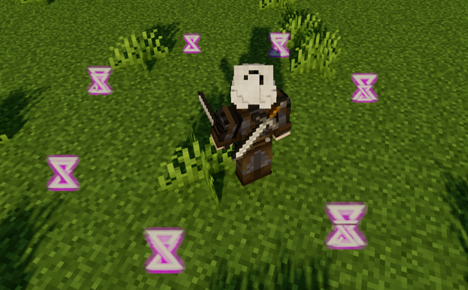
Yrden
Figures 2.2–2.6 - YRDEN Sign in action. Screenshots are works in progress and not indicative of the final product.
2.2 Alchemy System
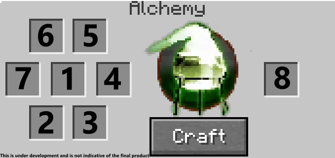
Figure 2.7 - The Alchemy Menu (press B). Slot 1: alchemy base. Slots 2–7: ingredients. Slot 8: result.
The Alchemy system covers four distinct item categories. All items are craftable through the dedicated Alchemy Menu - no crafting table required, accessible anywhere in the world.
Potions provide temporary buffs and each raises Toxicity on consumption. Alchemy base: White Seagull.
| Potion | Effect |
|---|---|
| Swallow | Increases passive health regeneration |
| Thunderbolt | +20% increased damage; grants 100% crit rate during thunderstorms |
| Cat | Applies glowing effect to all mobs within radius, effectively granting visibility in darkness |
| Tawny Owl | Increases passive stamina regeneration |
| Killer Whale | Grants 100% oxygen while underwater |
| Blizzard | Increases attack speed and dodge chance |
| Full Moon | Increases maximum HP |
| Golden Oriole | Clears poison effect and grants poison immunity |
| Petris Philter | Increases Sign Intensity stat |
| White Raffard's Decoction | Instantly restores 75% of maximum HP |
| Black Blood | Reflects additional 15% damage to necrophages and vampires that attack the player |
| White Honey | Clears all active WitcherCraft alchemy effects and resets Toxicity to zero |
More powerful than potions with a higher Toxicity cost per use. Each is derived from a monster and grants abilities inspired by that creature. Alchemy base: White Seagull.
| Decoctin | Effect |
|---|---|
| Grave Hag Decoction | Increases passive HP regen with every 2 enemies killed |
| Water Hag Decoction | +40% increased damage when HP is full |
| Ekimmara Decoction | +10% life steal |
| Katakan Decoction | +10% critical hit chance |
| Leshen Decoction | Increases reflected damage |
| Foglet Decoction | Increases Sign Intensity during rain weather |
| Nekker Warrior Decoction | Increases damage while riding a horse |
| Succubus Decoction | Increases damage by X% every second while in combat (escalating) |
| Troll Decoction | Increases passive HP regeneration |
| Wraith Decoction | If more than 25% HP is lost in a single hit, automatically applies Quen |
| Werewolf Decoction | Increases passive stamina regeneration at night during clear weather |
| Wyvern Decoction | Increases damage by 1% with every hit, up to a maximum of +10% |
Applied to weapons as enchantments, each targeting a specific enemy archetype for bonus damage. Alchemy base: Tallow. Oil power enhanced by Viper School Gear.
| Oil | Target type |
|---|---|
| Necrophage Oil | Necrophages (Drowner, Rotfiend, Foglet, Graveir) |
| Vampire Oil | Vampires (Bruxa, Higher Vampire) |
| Specter Oil | Specters (Noonwraith, Wraith) |
| Insectoid Oil | Insectoids |
| Ogroid Oil | Ogroids |
| Beast Oil | Beasts |
| Draconid Oil | Draconids (Cockatrice) |
| Relic Oil | Relicts (Leshen, Fiend) |
| Cursed Ones Oil | Cursed enemies |
| Hanged Man's Venom | Humans / Nonhumans |
Throwable projectile entities - each is its own entity class with unique physics, trajectory, and hit detection. Alchemy base: Saltpeter. Bomb power enhanced by Wolven School Gear.
| Bomb | Effect on detonation |
|---|---|
| Devil's Puffball | Releases a lingering poison cloud |
| Dancing Star | Explodes and applies burning to nearby entities |
| Grapeshot | Deals physical fragmentation damage in an area |
| Northern Wind | Freezes nearby entities |
| Samum | Applies blind effect; blinded enemies have increased dodge chance against them |
| Dimeritium Bomb | Clears active magical effects in the area |
2.3 Witcher School Armor Sets
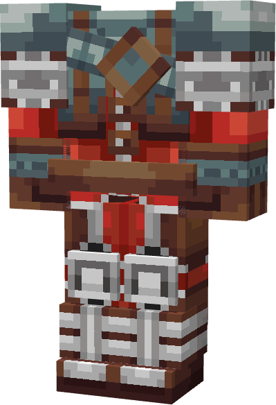
Figure 2.8 - Wolven Armor set rendered in-game. Uses a custom 3D renderer. Visual assets are works in progress.
All six sets consist of four pieces: Gloves, Chestplate, Leggings and Boots. Wearing the full set activates the School Effect. Mixing sets is possible but the School Effect only activates with a complete matching set. Armor can be repaired with Leather Scraps.
| Set | School Effect |
|---|---|
| Wolven | Balanced combat and Sign bonuses; enhances bomb effectiveness |
| Feline | +50% critical hit damage |
| Griffin | +20% Sign Intensity; reduces Sign cooldown to 22.5 seconds |
| Ursine | +20% maximum health |
| Viper | Enhanced oil effectiveness and poison mechanics |
| Manticore | Boosted potion duration and Alchemy power |
2.4 RPG Systems
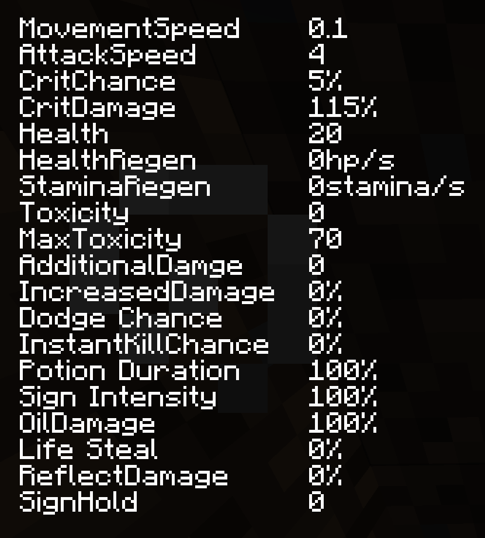
Figure 2.9 - The custom HUD overlay showing all live player stats. Visible when the Dev Log command is active.
All player stats are tracked persistently and displayed on a custom HUD overlay. The overlay is accessible via the /witchercraft devlog command during development and testing. Stats displayed: Health, Health Regen, Stamina Regen, Attack Speed, Damage, Critical Hit Chance, Critical Hit Damage, Movement Speed, Dodge Chance, Instant Kill Chance, Toxicity, Maximum Toxicity, Sign Intensity, Potion Duration, Life Steal, Reflect Damage, Oil Damage.
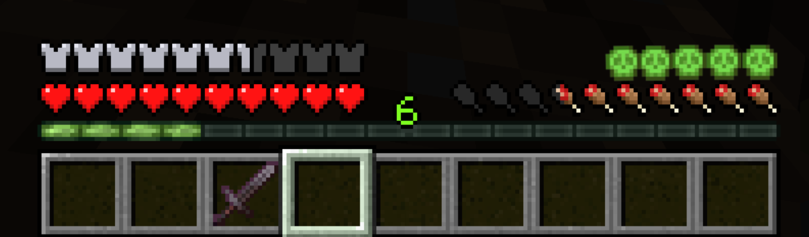
Figure 2.10 - Medium toxicity level, above hunger bar.
The Toxicity system governs the entire Alchemy pillar and creates the central risk/reward loop around potion use. Without it, optimal play is always maximum potion stacking - trivialising the system. Toxicity forces genuine preparation decisions.
- Every potion and decoction consumed increments current Toxicity by a fixed item-specific amount.
- Decoctins carry a higher Toxicity cost than standard potions, reflecting their greater power.
- Toxicity decays passively over time when potions are not being consumed.
- If current Toxicity exceeds Maximum Toxicity, health drains each tick until it falls back below the threshold.
- White Honey immediately clears all active effects and resets Toxicity to zero - an emergency reset at the cost of losing all active buffs.
- Maximum Toxicity can be raised through Acquired Tolerance upgrades in the Alchemy Skill Tree.
Perks within each tab are arranged in three tiers. Higher tiers unlock after spending a minimum number of points in that tab - 3 points to unlock Tier 2, 6 points to unlock Tier 3. This prevents immediately acquiring the most powerful upgrades and rewards sustained investment in a chosen path.
Tier 1 - Available from the start. Tier 2 - Requires 3 points spent in the tab. Tier 3 - Requires 6 points spent in the tab.
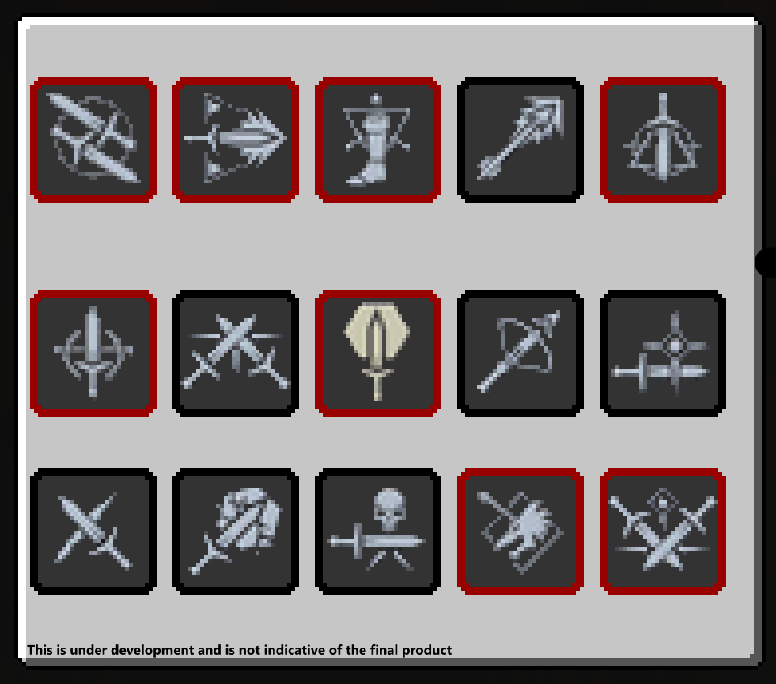
Figure 2.12 - Combat tab. Columns: Melee, Melee, Defence, Ranged, Battle Trance.
| Perk | Tier | Effect |
|---|---|---|
| Muscle Memory | T1 | +3 flat damage to all attacks |
| Strength Training | T1 | +10% increased damage |
| Fleet Footed | T1 | Increased movement speed |
| Cold Blood | T1 | If no enemy within 5 blocks, +5 damage |
| Flood of Anger | T1 | If an enemy is within 5 blocks, +5 damage |
| Precise Blows | T2 | +12% crit chance, +75% crit damage |
| Crushing Blows | T2 | +8% crit chance, +50% crit damage |
| Defence | T2 | +4 maximum HP |
| Anatomical Knowledge | T2 | If ranged weapon equipped, +10% crit rate |
| Razor Focus | T2 | +10% dodge chance |
| Crippling Strikes | T3 | Applies Bleed effect on hit |
| Sunder Armor | T3 | +20% increased damage |
| Deadly Precision | T3 | +1% instant kill chance |
| Crippling Shot | T3 | If ranged weapon equipped, +50% crit damage |
| Domination | T3 | Increases damage dealt to mobs |
| Undying | T3 | On death, restore HP to 50% - once per 15 minutes |
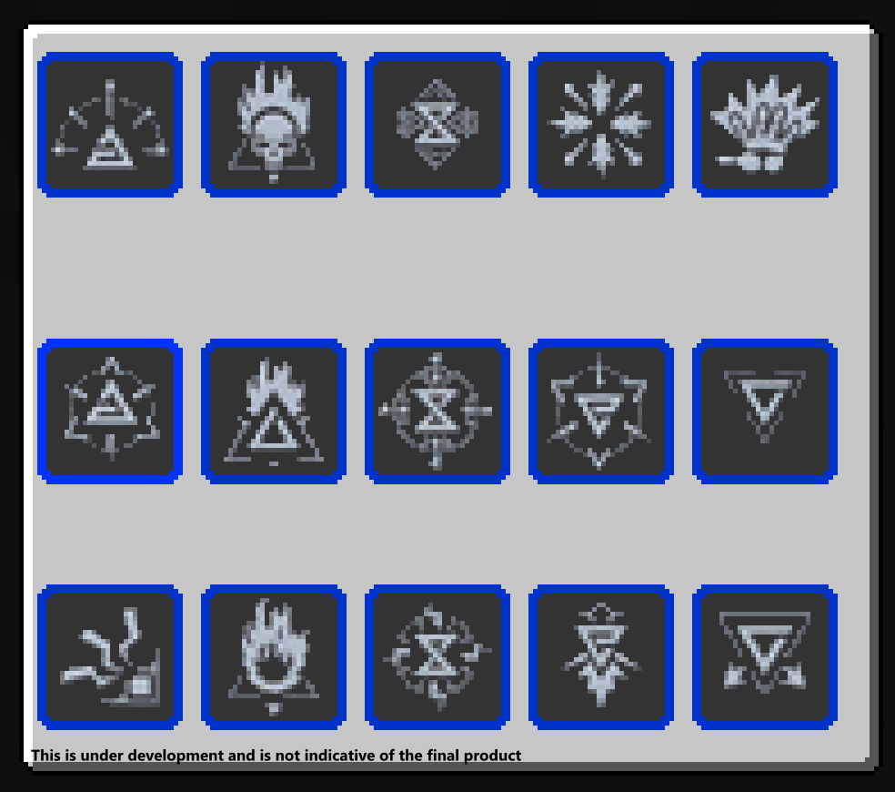
Figure 2.13 - Signs tab. Each Sign has its own upgrade column: Aard, Igni, Yrden, Quen, Axii.
| Perk | Tier | Effect |
|---|---|---|
| Aard Intensity | T1 | Increases Aard knockback force |
| Igni Intensity | T1 | Increases Igni burning duration |
| Yrden Intensity | T1 | Increases Yrden slow potency |
| Quen Intensity | T1 | Increases Quen maximum absorption |
| Axii Intensity | T1 | Increases Axii Sign duration |
| Aard Sweep | T2 | Alternate Aard form - strikes in radius around the player |
| Firestream | T2 | Increases Igni area of effect diameter |
| Magic Trap | T2 | Alternate Yrden form |
| Exploding Shield | T2 | When Quen ends, deal damage to all nearby enemies |
| Delusion | T2 | Grants Hero of the Village effect |
| Shock Wave | T3 | Aard deals X direct damage on hit |
| Pyromaniac | T3 | Igni deals additional burning damage per tick |
| Sustained Glyphs | T3 | Increases Yrden duration by 5 seconds |
| Quen Discharge | T3 | Deals absorbed damage back to the attacker |
| Domination | T3 | Increases damage dealt to mobs affected by Axii |
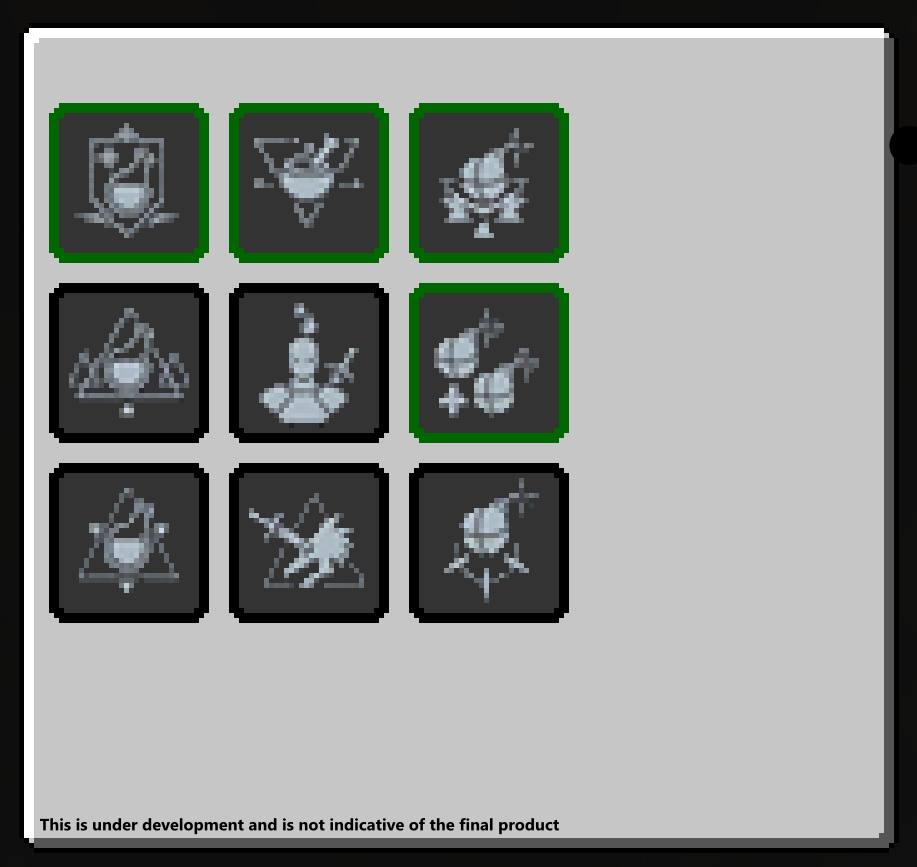
Figure 2.14 - Alchemy tab. Columns: Brewing, Oil Preparation, Bomb Creation, Mutation, Trial of Grasses.
| Perk | Tier | Effect |
|---|---|---|
| Refreshment | T1 | Each potion heals 10% of max HP on consumption |
| Poisoned Blades | T1 | Oils give a 5% chance to poison on hit |
| Pyrotechnics | T1 | Bombs deal additional damage |
| Acquired Tolerance 1 | T1 | Increases Maximum Toxicity |
| Endure Pain | T1 | Increases max HP by X when Toxicity is above threshold |
| Delayed Recovery | T2 | If Toxicity above 80%, reactivates the Elixir effect |
| Protective Coating | T2 | Reduces damage taken from the mob type targeted by the equipped oil |
| Efficiency | T2 | Bombs have a chance to remain in inventory after use |
| Acquired Tolerance 2 | T2 | Further increases Maximum Toxicity |
| Fast Metabolism | T2 | Toxicity drops X points faster per second |
| Side Effects | T3 | 33% chance to activate a random secondary potion effect on consumption |
| Hunter Instinct | T3 | Additional damage to the mob type targeted by the equipped oil |
| Cluster Bombs | T3 | Bombs have increased area of effect |
| Acquired Tolerance 3 | T3 | Maximum Toxicity increase - unlocks full alchemist potential |
| Killing Spree | T3 | When Toxicity is above 0, increases crit chance for X seconds (stackable) |
Accessible from the Pause Menu. Allows the player to fast-travel to a specific time of day, enabling passive health and stamina regeneration tied to the chosen time.
2.5 Bestiary & Glossary
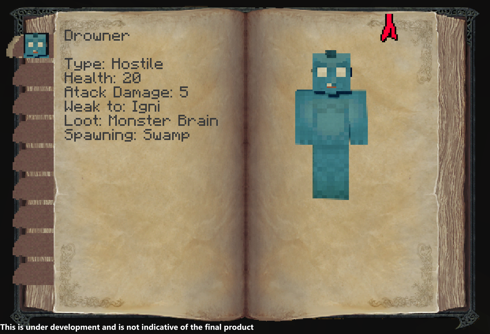
Figure 2.16 - The in-game Bestiary with monster lore, type, health and attack data.
In-game encyclopedia with entries for Drowner, Foglet, Graveir, Bruxa, Higher Vampire, and Rotfiend. The Glossary provides lore and terminology references for the Witcher universe.
3. Monsters & Mobs
3.1 Bestiary Entries Implemented
| Monster | Type | HP | Damage | Weak to |
|---|---|---|---|---|
| Drowner | Necrophage | 20 | 5 | Necrophage Oil |
| Foglet | Relict | 30 | 5 | Relict Oil |
| Graveir | Necrophage | 50 | 4 | Necrophage Oil |
| Bruxa | Vampire | 30 | 7 | Vampire Oil |
| Higher Vampire | Vampire | 30 | 5 | Vampire Oil |
| Rotfiend | Necrophage | 40 | 4 | Necrophage Oil |
3.2 Models Ready - Entities In Development
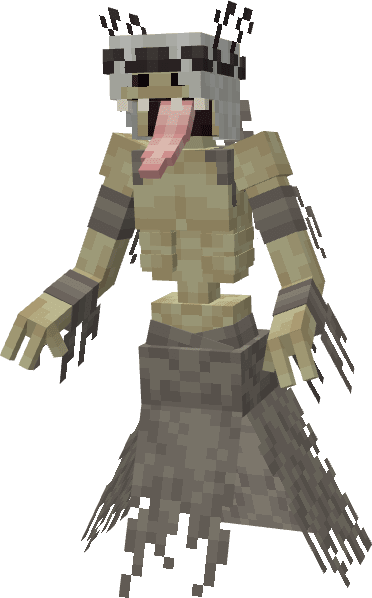
A spectral apparition born from the spirit of a woman who died violently at noon. Appears as a shimmering heat-distorted figure in open fields during midday. Type: Specter | Weakness: Specter Oil


A massive relict resembling a giant elk with multiple eyes, capable of hypnotizing prey with its central eye. Type: Relict | Weakness: Relict Oil
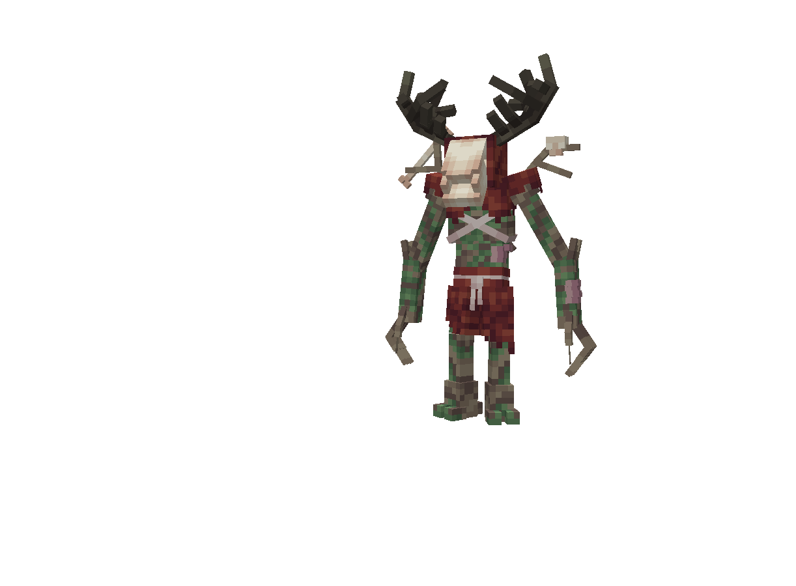

Ancient forest guardians that command animals and plant life, summoning crows and roots to overwhelm intruders. Type: Relict | Weakness: Relict Oil

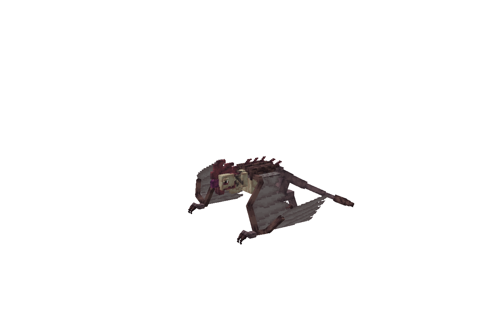
A winged draconid with the head of a rooster. Aggressive aerial predator attacking with beak, talons, and tail. Type: Draconid | Weakness: Draconid Oil
4. Technical Design
This section covers the key engineering and design decisions behind Witchercraft - the problems each system solves and the rationale behind the chosen approaches.
4.1 Damage Model & Formula
Witchercraft replaces Minecraft's default damage calculation with a custom DamageCalculatorProcedure that fires on every player attack.
| Variable | Description |
|---|---|
| baseDamage | Raw damage value of the weapon or attack source |
| additionalDamage | Flat bonus damage added before any multipliers |
| increasedDamage | Percentage damage bonus, stored as integer (e.g. 10 = +10%) |
| critChance | Integer 1–100. Rolled against a random number each hit |
| critDamage | Crit multiplier stored as integer (e.g. 150 = ×1.50) |
| lifeSteal | Percentage of final damage restored as health (e.g. 10 = 10%) |
finalDamage = (baseDamage + additionalDamage) × (1 + increasedDamage × 0.01)
healthRestored = finalDamage × lifeSteal × 0.01
critRoll = random(1, 100)
if critRoll <= critChance:
finalDamage = (baseDamage + additionalDamage)
× (1 + increasedDamage × 0.01)
× (critDamage × 0.01)
healthRestored = finalDamage × lifeSteal × 0.01
All percentage stats are stored as integers and multiplied by 0.01 at calculation time - avoiding floating point drift. The Ender Dragon is explicitly excluded from the crit path to prevent one-shot boss scenarios. Damage and life steal resolve via a one-tick server-side delay, preventing race conditions in multiplayer.
4.2 Developer & Debug Commands
Custom commands for development and debugging. The Dev Log command exposes the full damage calculation pipeline in real time via chat, enabling live verification of stat changes from skill upgrades, gear, and potions.
| /witchercraft stats | Prints all current player variables - Toxicity, crit chance, crit damage, life steal, etc. |
| /witchercraft levelfix | Corrects any desync in player level or XP values during testing |
| /witchercraft devlog | Toggles Dev Log. With it active, every damage calculation prints its full breakdown to chat - base damage, combined damage, crit roll, crit result, and life steal |
| /witchercraft resetskills | Resets all Skill Tree investments, returning spent points for redistribution |
| /witchercraft settoxicity [value] | Directly sets current Toxicity to the specified value for testing threshold behaviours |
4.3 Package Architecture
| Package | Contents |
|---|---|
| client/gui | All custom GUI screens - Sign menu, Pause menu, Alchemy, Character, Bestiary, Meditation, Glossary |
| client/particle | Custom particle implementations per Sign |
| client/renderer | Custom 3D armor renderers for all six school sets |
| client/screens | HUD overlays - Stats, Toxicity, Medallion |
| entity | Projectile and particle entities (bombs, Sign particles) |
| item | Individual item logic classes |
| init | Registry classes - Items, Entities, Effects, Menus, Particles, Keybindings, Tabs |
| network | Client-server synchronisation packets for player stat persistence |
| potion | Custom mob effect implementations |
| procedures | Shared game logic including DamageCalculatorProcedure |
| command | Developer and utility commands |
| world/inventory | Custom container and inventory logic |
5. Planned Features
- Monster Entity Implementation - Full AI behavior, attack patterns, loot tables, and spawning rules for all planned monsters.
- Contract System - Witcher Contract notice board quests tying the Bestiary, monsters, and economy into a cohesive loop.
- Expanded Crafting & Economy - Alchemy ingredient sourcing through monster drops and world exploration.
- World Generation - Custom structures: abandoned villages, monster nests, notice boards, herbalist huts.
6. Installation
- Download and install NeoForge from the official NeoForge installer.
- Place the WitcherCraft
.jarfile into your Minecraft/mods/folder. - Launch Minecraft using the NeoForge profile.
- Press
Tabto open the Sign Menu andBto open Alchemy. Access Character, Skill Tree, Bestiary and Meditation from the Pause Menu.
7. Technologies Used
| Technology | Role |
|---|---|
| Java | Primary programming language |
| NeoForge | Minecraft mod loader and API framework |
| Minecraft Java Edition API | Entity system, item registry, effects, enchantments, particles |
| Blockbench | 3D modeling for armor sets and monster models |
| Krita / Pixel Studio | Texture and icon art |
| JSON asset pipeline | Item models, equipment definitions, language files |
| Custom network packets | Client-server synchronisation for player stat persistence |